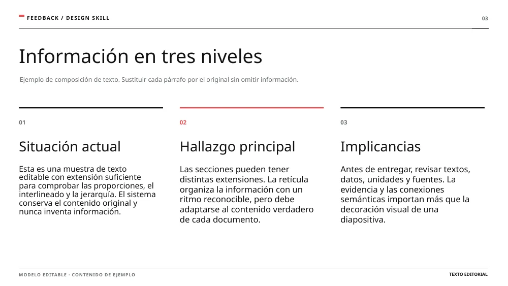
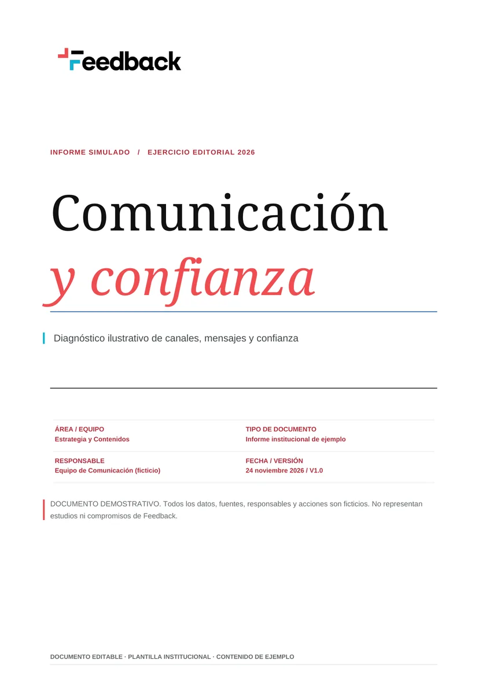

01
Contenido intacto
No inventar, resumir ni eliminar textos, cifras o datos. En presentaciones, el diseño cambia; la información permanece.
Design Skill / Acceso
Ingresa la clave de acceso para explorar el sistema gráfico y sus recursos.
Un lenguaje visual. Infinitas aplicaciones.
Una skill de diseño para transformar instrucciones en collages, presentaciones y piezas editoriales que mantienen la identidad de Feedback, sin alterar la información original.
Recursos editables · Documentación v2.0 · Leer las instrucciones ↗

No inventar, resumir ni eliminar textos, cifras o datos. En presentaciones, el diseño cambia; la información permanece.
Recortes precisos, fotografía en blanco y negro, formas geométricas y enfoque en detalles, manos y personas de espaldas.
Composiciones asimétricas, grandes espacios blancos, energía visual medida y una jerarquía tipográfica reconocible.
Chile y sus territorios con referencias comprobables. Las imágenes sintéticas nunca se presentan como fotos documentales.
Collages editoriales sin rostros protagonistas, sin titulares ficticios y sin textos dentro de las composiciones. Estrategia, medios y conversación digital en el lenguaje visual Feedback.


Una caja de herramientas flexible para que cada pieza se vea distinta, pero pertenezca al mismo sistema.
La vista web utiliza fuentes de reemplazo. El skill especifica las tipografías originales; no redistribuye archivos comerciales.
Dos familias, un mismo lenguaje: carácter editorial en los titulares y precisión en la información. Consulta los estilos y obtén las fuentes mediante sus distribuidores autorizados.
IDENTIDAD / TIPOGRAFÍAS PRINCIPALESImportante: son tipografías comerciales. Los enlaces llevan a la página de licencia y descarga de los distribuidores; el sitio de Feedback no aloja ni redistribuye archivos OTF/TTF. Para utilizarlas en documentos editables, deben estar instaladas legalmente en el computador de trabajo.
Una misma identidad, distintas formas de mostrar información. Elige el gráfico según lo que necesitas comunicar.
SISTEMA FEEDBACK / SEIS FORMAS DE VISUALIZAR
Comparar magnitudes entre categorías.
01 / 06Úsalo para comparar categorías en un mismo período: regiones, marcas, resultados o segmentos.
Mantén una base cero en barras convencionales, escala uniforme, orden claro y etiquetas legibles. Destaca solo la categoría relevante con coral.
No cortes el eje de valores ni uses 3D. Evita barras decorativas que distorsionen las proporciones.
Aplica Feedback Design Skill. Convierte mis datos en un gráfico de barras editable. Conserva categorías, cifras, unidades, orden y fuente. Usa eje desde cero, retícula limpia, Akzidenz-Grotesk Pro y un acento coral para el dato destacado. No inventes valores.
Descargar SVGRegla Feedback. El diseño cambia; los datos no. Se conservan valores, unidades, fechas, categorías y fuentes. Las muestras anteriores son ejemplos de estilo con datos simulados.
El mismo principio editorial, aplicado a diferentes formatos. Selecciona un tipo para generar una instrucción de ejemplo.
Un punto de partida, listo para copiar y personalizar.
Construye una instrucción precisa sin partir de cero. Las opciones solo cambian el pedido: nunca los datos originales.
Los ejemplos de tratamiento son demostrativos y no prueban correspondencia literal con documentos de clientes.
Situación actual
Texto de ejemplo sin jerarquía, organizado en un único bloque.
Hallazgo principal
Información sin estructura visual.

DESPUÉS / SISTEMA EDITORIALCategoría A = 84
Categoría B = 67
Categoría C = 54
Categoría D = 42
Categoría E = 28
DESPUÉS / COMPARACIÓN LEGIBLEComunicar estrategia y planificación mediante una mano y una pieza de ajedrez.
Fotografía en blanco y negro. Acentos coral y cian. Sin texto integrado.
Una forma de presentar información institucional con claridad, criterio y una identidad reconocible.
Una aplicación real de Feedback Design Skill a un informe institucional de cuatro páginas A4. El rediseño mantiene íntegros los textos y datos simulados de origen, con mayor jerarquía tipográfica, retícula editorial y tablas editables.
Cuatro páginas A4 editables · Identidad Feedback 2026 · Plantilla original y rediseño disponibles

Identidad y título principal
Ideas y objetivos esenciales
Resultados y tabla editable
Conclusiones y próximos pasos
La documentación vigente de Feedback Design v2.0.0 incorpora retícula de 12 columnas, reglas de contraste, visualizaciones y UI UX Pro Max para interfaces. Los ZIP históricos v1.2.0 permanecen disponibles.
Consultar la documentación v2.0.0 ↗
Paquete completo v2.0.0: pendiente de incorporar el ZIP original al sitio.
Descargar skill completa v2.0.0 ↘En Claude.ai: Personalizar → Skills → + → Crear skill → Subir un skill. En Claude Code: colocar la carpeta feedback-design en .claude/skills/. Ver instalación completa ↗
Obtén la carpeta feedback-design en tu computador.
Agrega SKILL.md y la carpeta de referencias a tu asistente o proyecto compatible.
Solicita: «Aplica Feedback Design Skill» y adjunta los archivos originales cuando existan.
Revisa contenido, tipografías, fuentes de imagen y editabilidad antes de publicar.
Ejemplos preparados para adaptar, no resultados de investigaciones reales.
En ChatGPT, abre Skills → Create → Upload from your computer y selecciona el ZIP de ChatGPT. Si tu cuenta no muestra Skills, adjunta SKILL.md y sus referencias a un proyecto compatible, sin afirmar que quedó instalado como skill.
En Claude.ai, utiliza Personalizar → Skills → + → Crear skill → Subir un skill y selecciona el ZIP para Claude. En Claude Code, coloca la carpeta feedback-design dentro de .claude/skills/.
Una comprobación mínima para presentaciones, informes y recursos visuales. Marca cada revisión cuando esté confirmada.